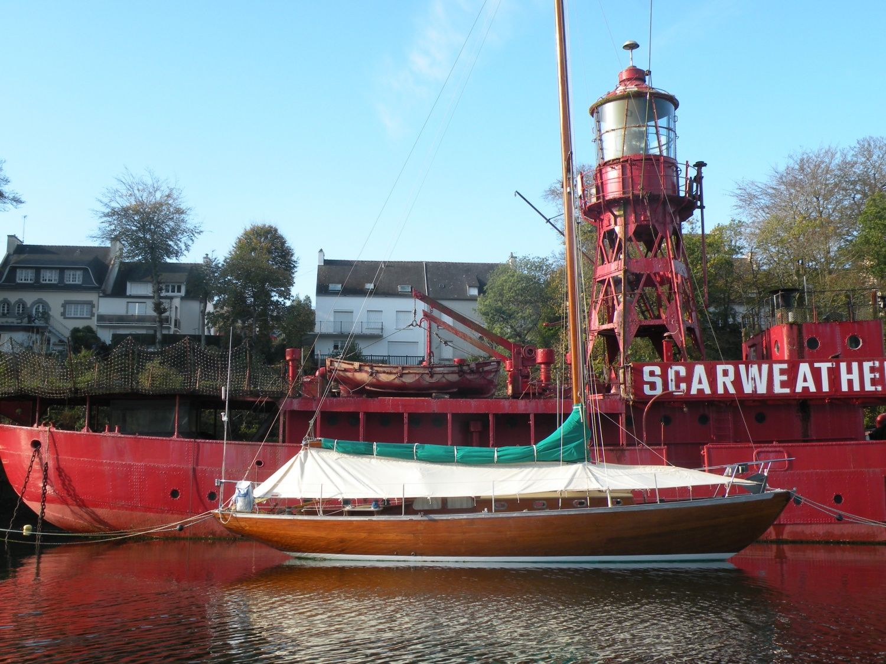
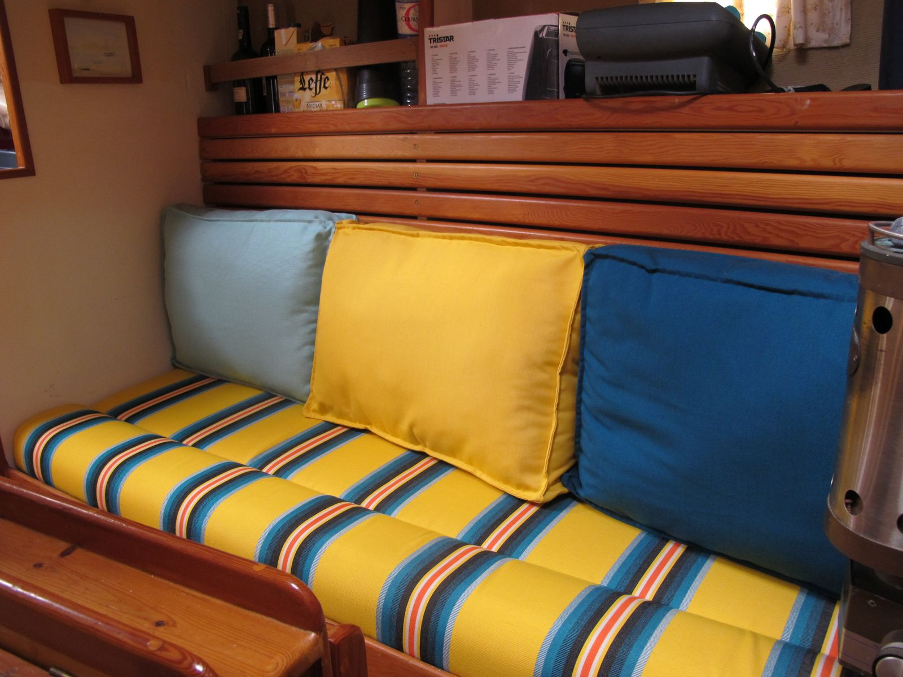
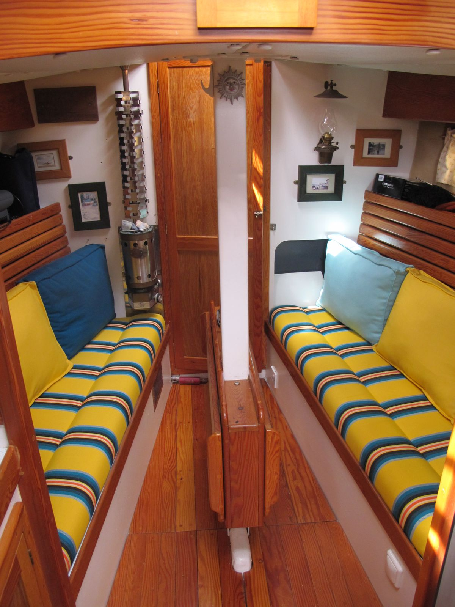
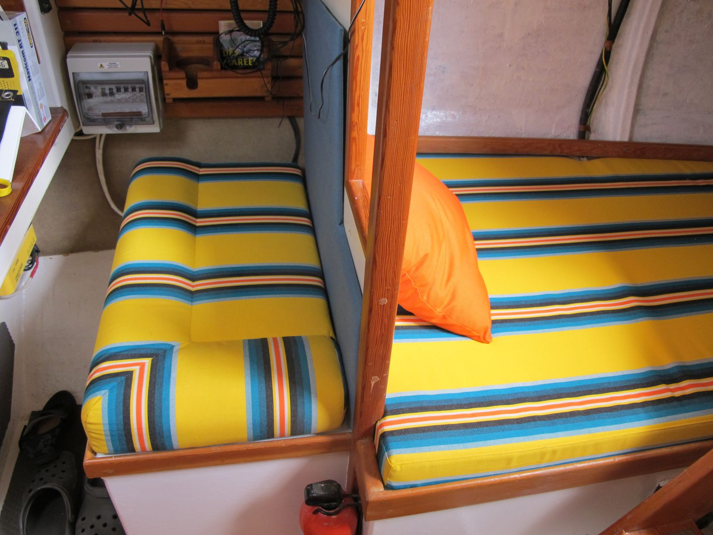
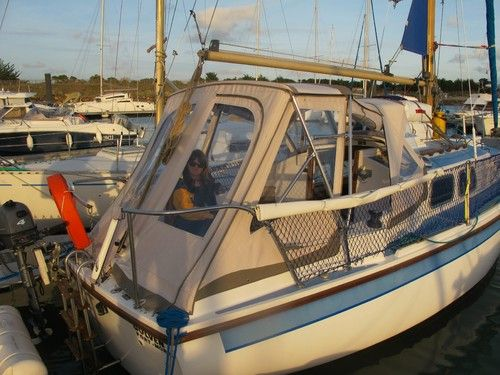
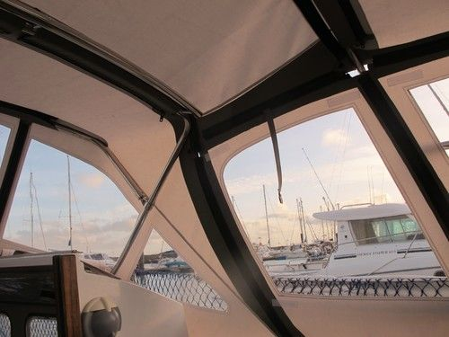
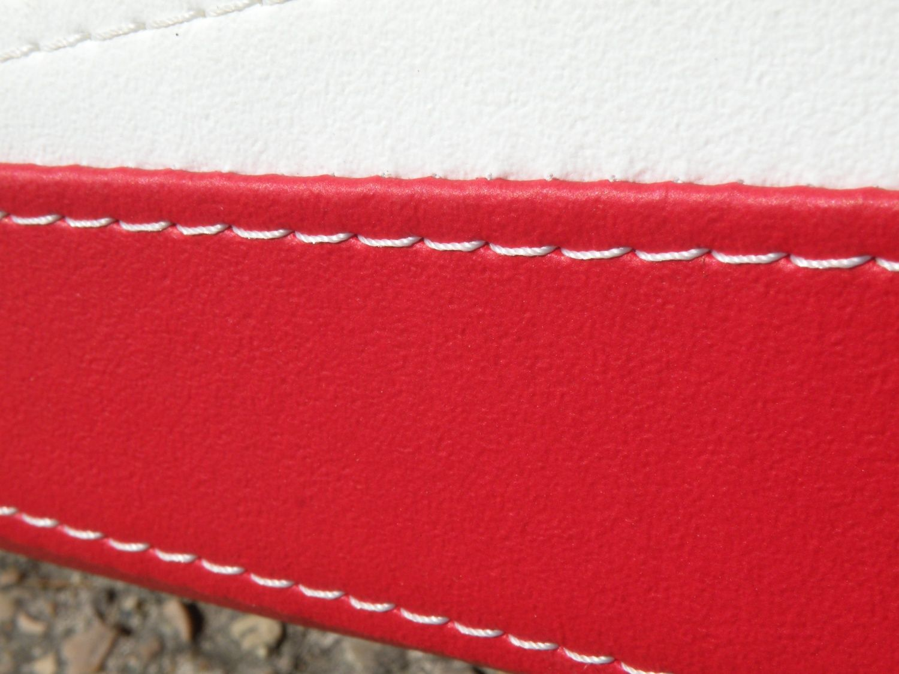
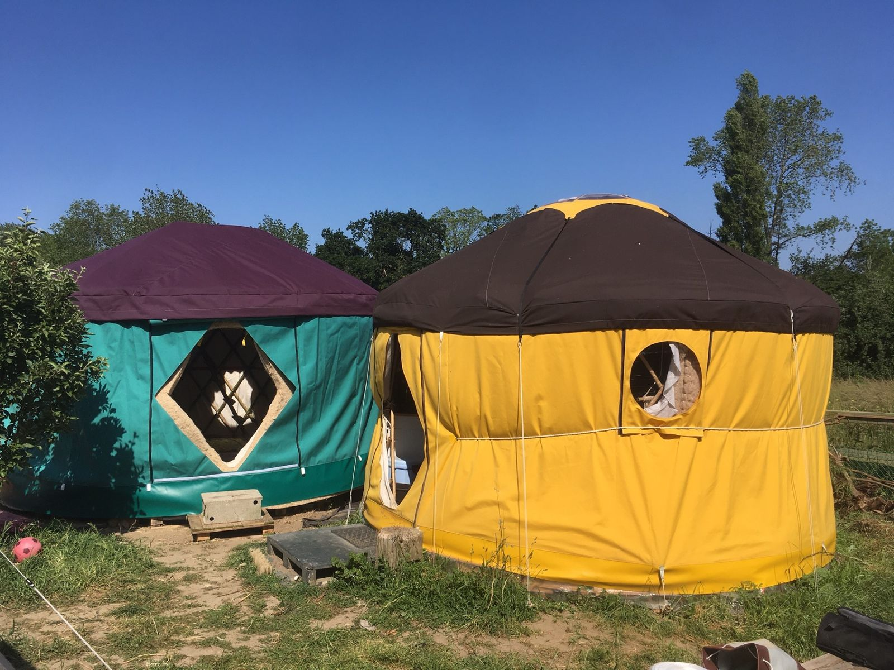
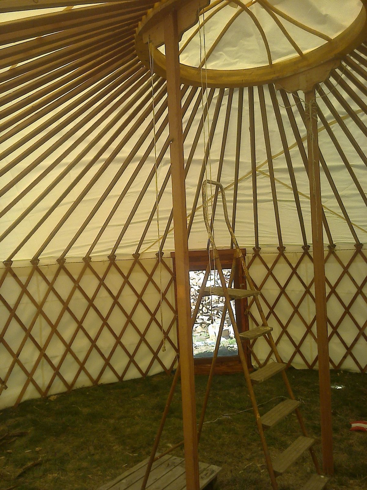
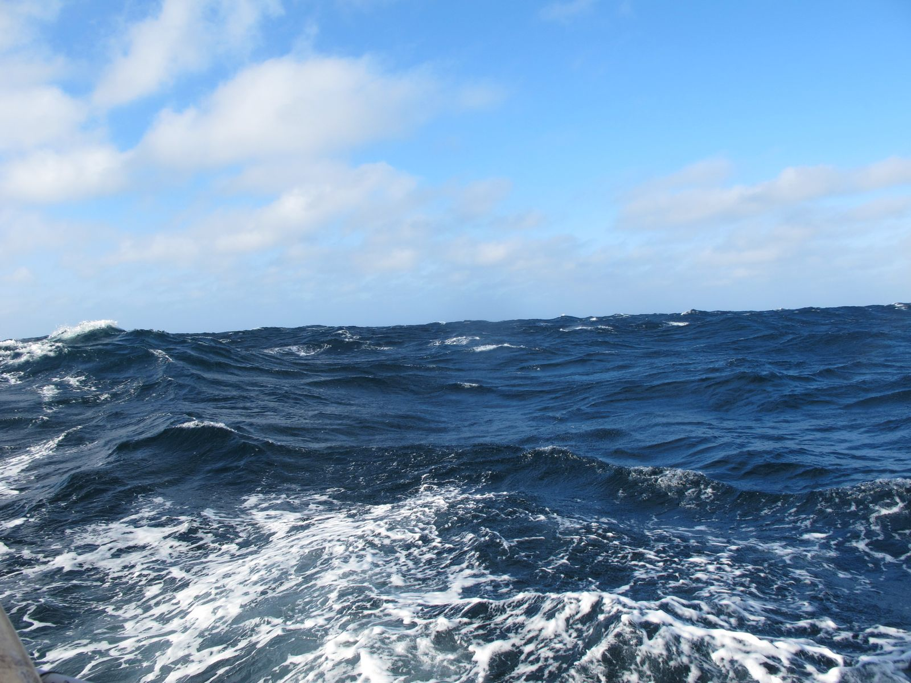

Sellerie nautique et de plein air en pays bigouden, à Plonéour-Lanvern
Coutures nomades
Toiles et coussinages pour votre bateau, votre véhicule aménagé, votre habitat léger et votre jardin.

Ar Vag, c'est « le bateau » en breton. L'atelier coud des toiles et des coussins sur mesure en Finistère sud depuis 2011.
En mer
Des toiles acryliques qui tiennent au soleil et au sel, garanties cinq ans par le fabricant, coupées et cousues pour votre bateau.
Tauds et protections
- Tauds d'hivernage, de soleil et de camping
- Lazy-bag et taud de grand-voile
- Housses de génois et de trinquette
- Capotes de roof et de descente
- Housses de barre à roue, de claire-voie, de hublot
- Coussins de cockpit
Intérieur
- Coussins et banquettes
- Toiles anti-roulis
- Rangements textiles
- Rideaux
- Vaigrages
Retouches et tissus
Une toile fatiguée se répare souvent.
- Reprise des coutures
- Remplacement des fenêtres cristal
- Fermetures et fixations
- Fourniture de tissus pour vos propres travaux






À terre
Le même savoir-faire pour ceux qui vivent dehors : habitats légers, jardins et terrasses.
Habitat léger
- Toiles de yourtes et de tipis
- Tissus ignifugés pour les établissements recevant du public
- Poly-coton et bâches
En partenariat avec Baboom pour les flex-yourtes.
Jardin
- Voiles d'ombrage
- Brise-vues
- Auvents
- Coussins d'extérieur


L'atelier
Harold a appris le métier aux ateliers de l'Enfer, à Douarnenez. Il navigue lui-même sur un voilier de 10,50 m basé à Port-Rhu : il sait ce qu'une toile doit encaisser au mouillage comme en navigation.
L'atelier choisit des fournisseurs proches et des matériaux sains, et donne une seconde vie aux vieilles voiles et aux bâches, avec Publigraphic à Pont-l'Abbé.
Partenaires
- Archipel excursions, sorties en semi-rigide en mer d'Iroise
- Baboom, flex-yourtes
- Publigraphic, Pont-l'Abbé
- TA France, fournisseur

Passer à l'atelier
Ar Vag Sellerie12 rue des Alliés
29720 Plonéour-Lanvern
- Horaires
- À confirmer avec l'atelier.
- Secteur
- Pays bigouden et Finistère sud.
Votre projet de toile
Un taud à refaire, des coussins à recouvrir, une toile de yourte ? Décrivez votre bateau ou votre installation et joignez quelques photos.
Le formulaire de demande de devis sera branché sur le site final.